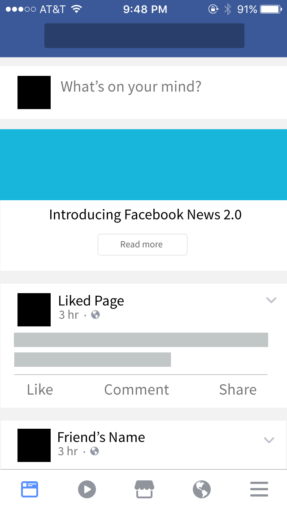
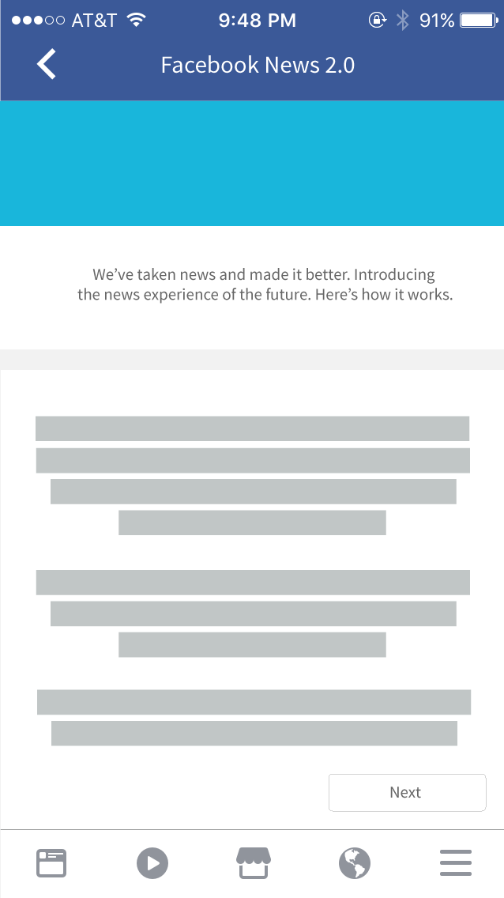
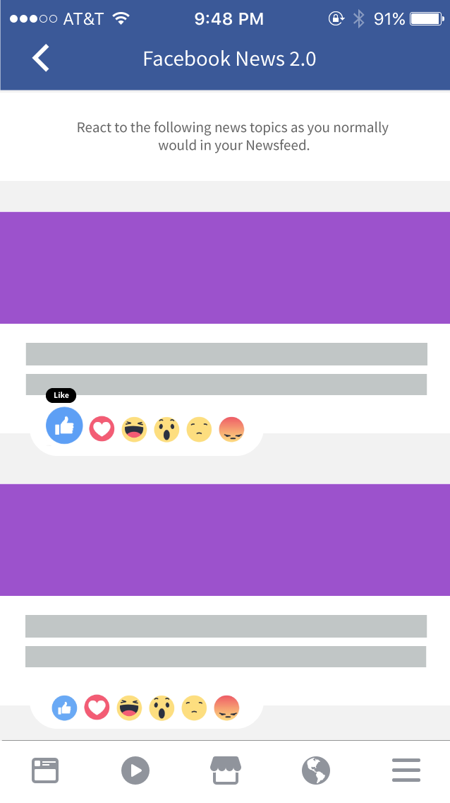
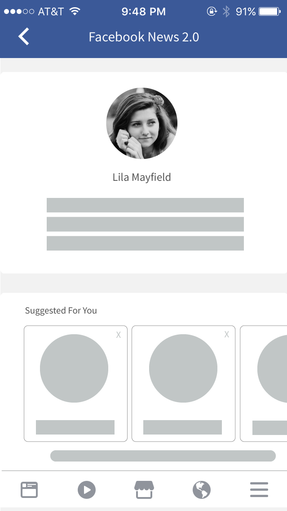
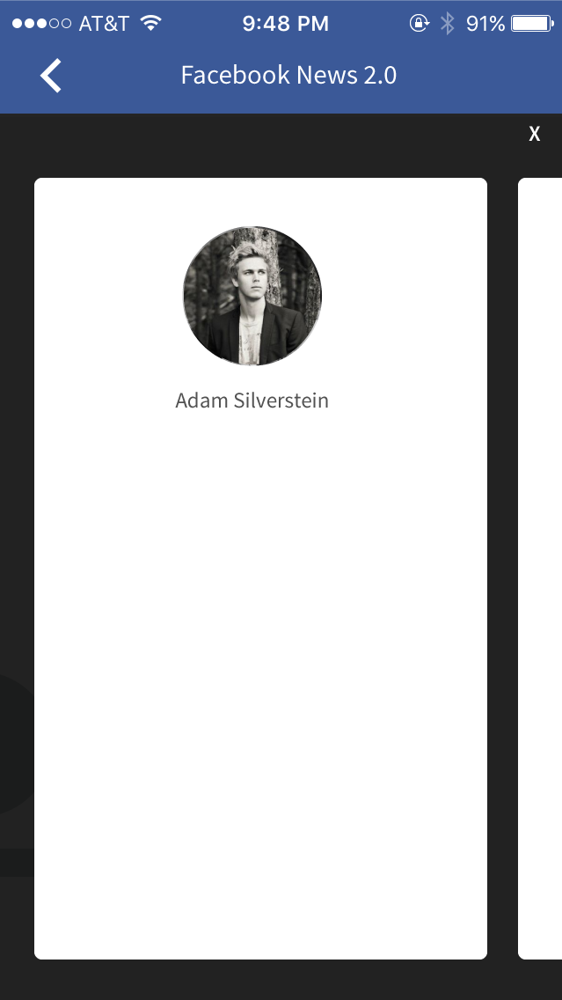
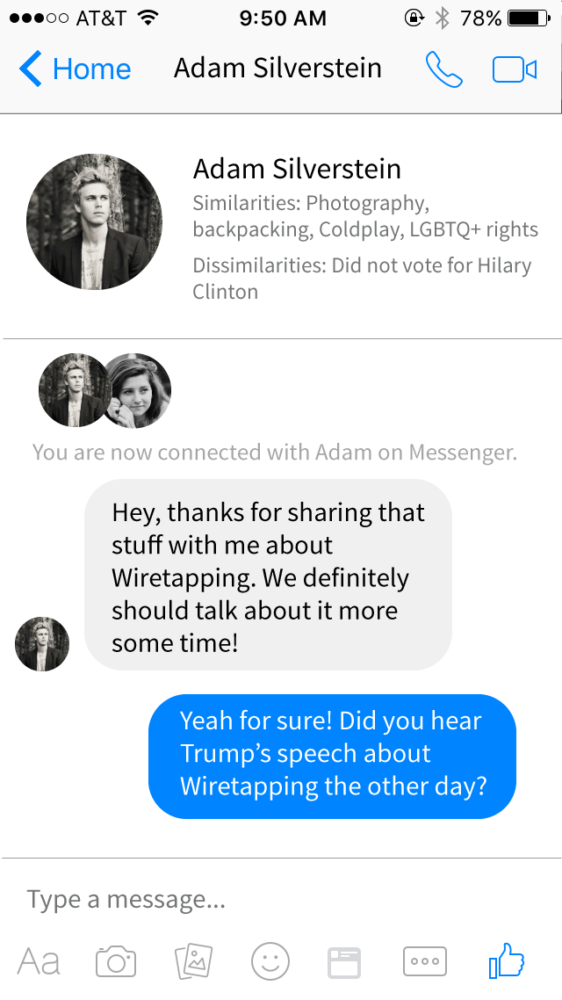
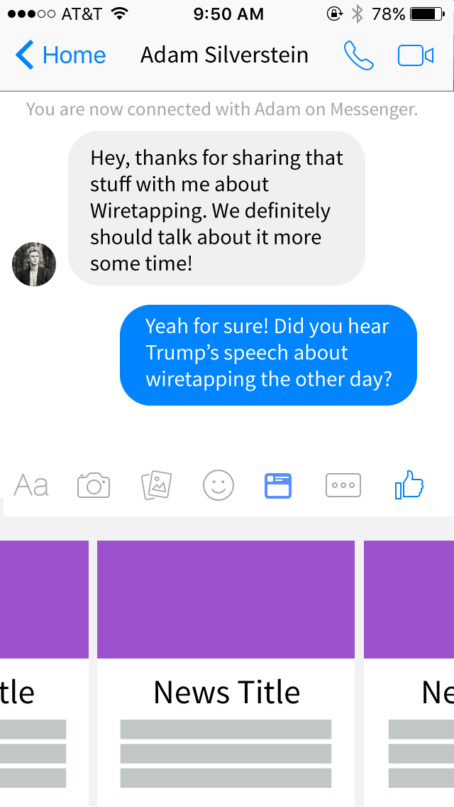
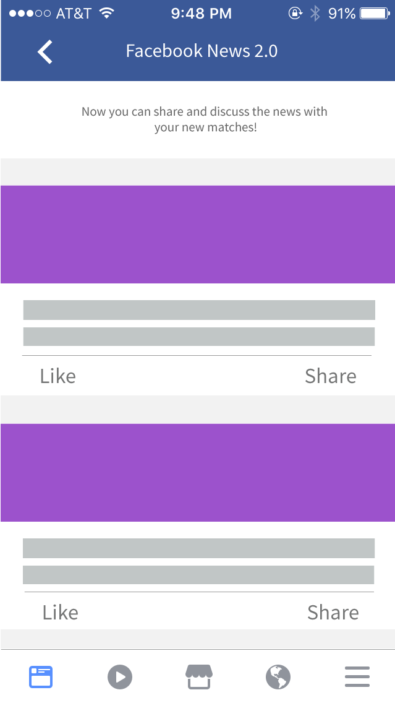
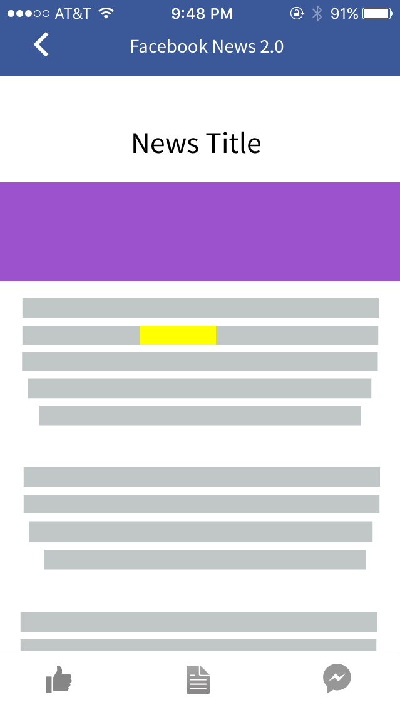
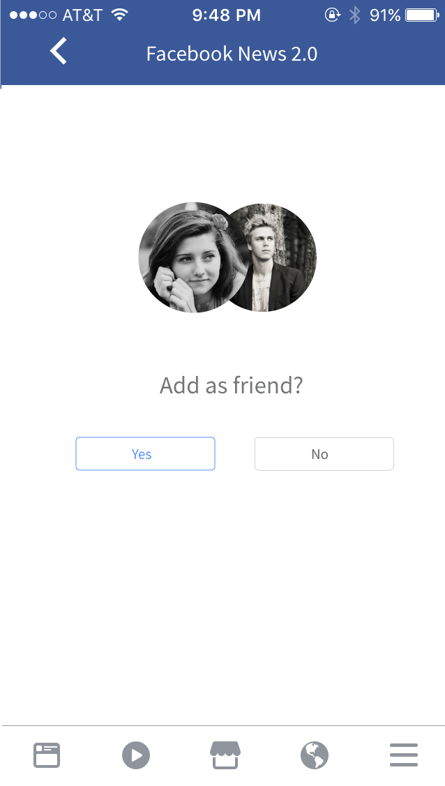

The Problem: With the results of the 2016 Election, it became painfully clear that people across the nation see different information about the same topic. This is mainly due to advertising targetting people based on their likes, as well as people mostly talking to similar-minded people.
Research Methods: Immersive secondary research (i.e. news articles)
Solution: A Facebook feature which matches people with many similarities but a few distinct differences in their ideology. The similarities allow people to build rapport with each other, while the differences help the matched people learn something new. Matched people share and discuss news articles with those they are matched with, and curate news for them.

1. A banner displays the new feature non-intrusively, similar to pre-existing "Good morning" banners.

2. The general idea of the feature is presented, and the user can decide whether to participate.

3. If participating, the user taken to a page with trending news articles, which they then react to.

4. User profile is generated based on interests and responses to the articles on the previous screen.

5. The user can browse through other profiles that are similar to their own, but have distinct differences.

6. After choosing a profile, the user can contact that person and they can become each others' news curators.

7. Within the Messenger app, a new feature would allow the user to find news articles they want to share.

8. The user can view a curated list of news articles that the person they contacted selected.

9. Both the user and the curator can view, highlight, and comment directly on the article, and can add a react.

10. If the user enjoyed the interaction, they can add their news curator as a friend and continue to interact.